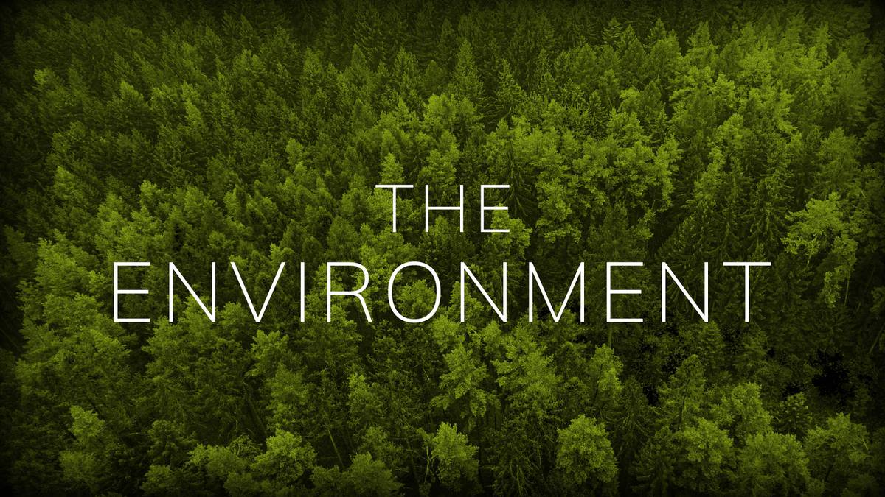

BẢO VỆ MÔI TRƯỜNG VÀ TÀI NGUYÊN THIÊN NHIÊN

Vậy môi trường là gì?
Môi trường chính là không gian sống của con người và các loài sinh vật. Đây chính là nơi cung cấp những tài nguyên thiên nhiên như rừng, khoáng sản, động thực vật quý hiếm,… và những yếu tố vật chất nhân tạo quan hệ mặt thiết với nhau, phục vụ, ảnh hưởng tới đời sống, quá trình tồn tại và phát triển của cuộc sống của con người. Nhưng đây cũng chính là nơi chứa những chất thải mà con người tạo ra.Môi trường chính là không gian sống của con người và các loài sinh vật. Đây chính là nơi cung cấp những tài nguyên thiên nhiên như rừng, khoáng sản, động thực vật quý hiếm,… và những yếu tố vật chất nhân tạo quan hệ mặt thiết với nhau, phục vụ, ảnh hưởng tới đời sống, quá trình tồn tại và phát triển của cuộc sống của con người. Nhưng đây cũng chính là nơi chứa những chất thải mà con người tạo ra.
Phân loại môi trường: